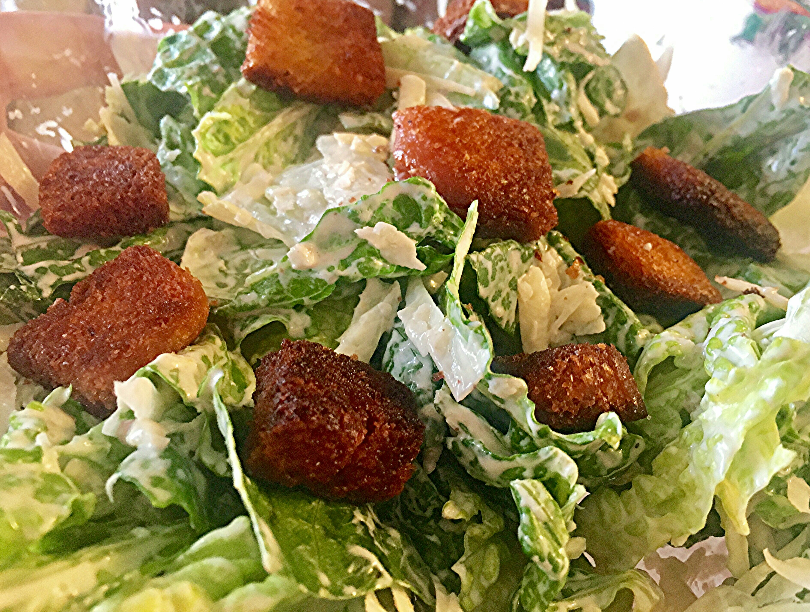

Caesar Salad Recipe

Description
Here's the best Caesar salad recipe I have ever tasted! A wonderful, rich, anchovy dressing makes this salad a meal. Serve with crusty Italian bread.
Ingredients
- Romaine Lettuce
- Salt
- Pepper
- Parmesan Cheese
- Caesar Dressing
Directions
- Clean lettuce thoroughly and wrap in paper towels to absorb moisture. Refrigerate until crisp, at least 1 hour or more.
- In a bowl or jar combine oil, vinegar, Worcestershire sauce, salt, mustard, garlic and lemon juice. Whisk until well blended.
- Coddle egg by heating 3 cups of water to boiling. Drop in egg (still in shell) and let stand for 1 minute. Remove egg from water and let cool. Once cooled crack open and whisk egg into dressing. Whisk until thoroughly blended.
- Mash desired amount of anchovies and whisk them into the dressing. If desired set aside a few for garnish.
- To assemble, place torn lettuce leaves in a large bowl. Pour dressing over the top and toss lightly. Add the grated cheese, garlic croutons and freshly ground pepper, toss. Serve immediately!